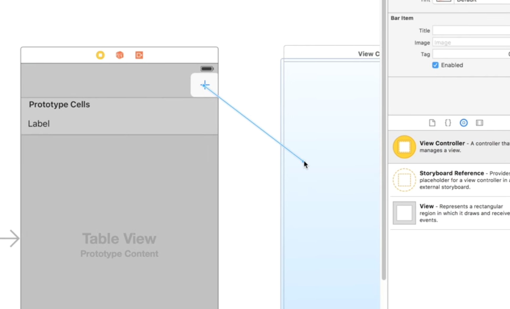
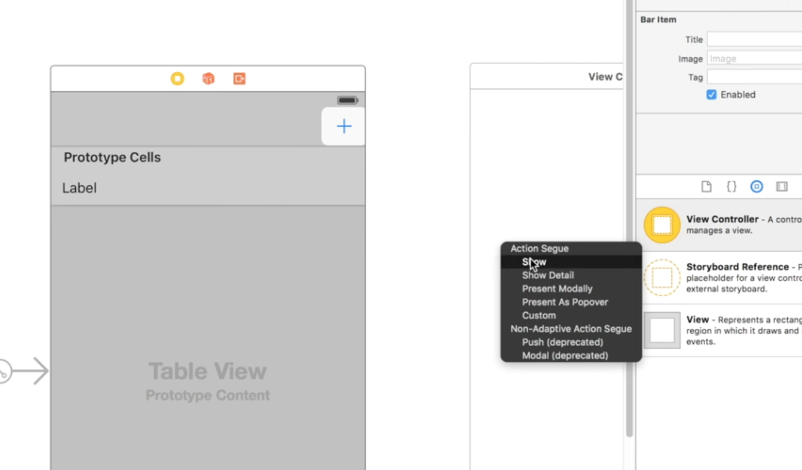
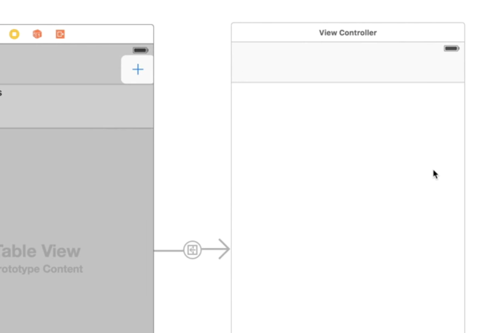
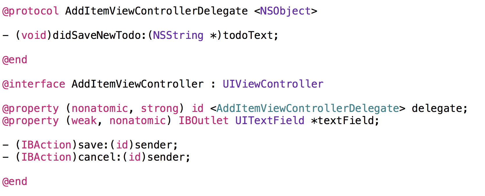
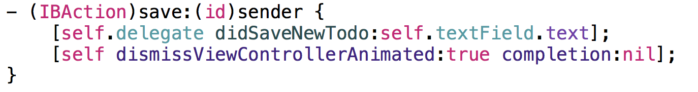
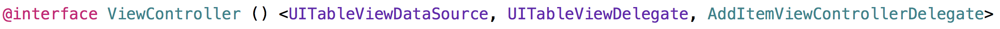
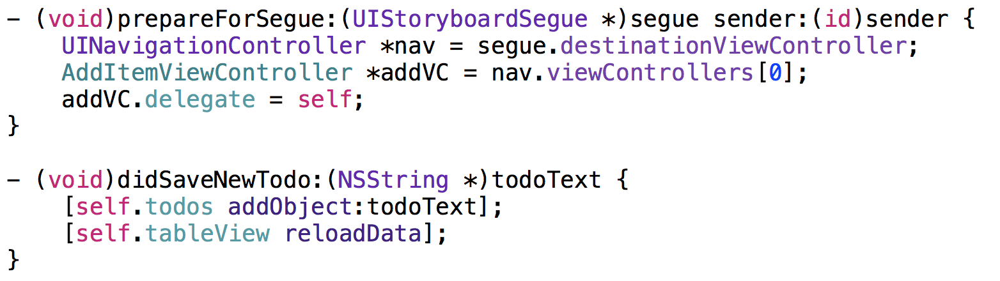

Building a Todo list iPhone App with Objective-C: Part 2
Building out the Todo app will teach you how to expand on the things you learned in the previous tutorial. We will extend our existing Todo app and give users the ability to add new Todo’s with any text they want.
What you'll learn Creating view controllers & segues with Storyboards Creating a basic data model Target-action Delegation Debugging in Xcode using breakpoints
Creating view controllers & segues with Storyboards
To create a view controller in storyboards we need to do a couple things:
Open the storyboard in question, navigate to the object panel in Interface Builder & Search for a View Controller object
Drag the View Controller object on to the storyboard
Creating a segue from one view controller to another
Creating a basic data model
Our Todo application doesn’t actually display a lot of interesting information. It currently only displays strings! NSString’s of course.
Let’s take a quick look at the UI:
We need to come up with a way to hold those strings in a data structure that can grow and shrink (Removing Todo’s in the next tutorial). Let’s evaluate a few data structures and pick which is the best to accomplish this task.
First let’s define what we need to accomplish:
- We need to be able to add elements to it
- We need to be able to remove elements from it
- We need to be able to access an element by index
NSDictionary
“The NSDictionary class declares the programmatic interface to objects that manage immutable associations of keys and values. Use this class or its subclass NSMutableDictionary when you need a convenient and efficient way to retrieve data associated with an arbitrary key. NSDictionary creates static dictionaries, and NSMutableDictionary creates dynamic dictionaries.” - Apple
Hmm.. do we need to retrieve data by key? Our list of what we would accomplish states that “We need to be able to access an element by index”
NSDictionary is a no go.
NSArray and it’s mutable counter part NSMutableArray
“NSArray and its subclass NSMutableArray manage ordered collections of objects called arrays. NSArray creates static arrays, and NSMutableArray creates dynamic arrays. You can use arrays when you need an ordered collection of objects.” - Apple
I really like these parts of the excerpt:
- use arrays when you need an ordered collection of objects
- NSMutableArray creates dynamic arrays
Remember from C that an array holds elements like this…
In order to display data in a UITableView we need to implement the UITableViewDataSource protocol. That protocol has two methods that are absolutely required in order to make the table view work:
tableView:UITableView numberOfRowsInSection:(NSInteger)section tells the table view how many rows it should display. This will more than likely always be the amount of data we have or the count of elements in our data structure.
tableView:UITableView cellForRowAtIndexPath: NSIndexPath tells the table view what it should display at a given indexPath
NSIndexPath is made up of a row & a section both are NSIntegers.
Well if the rows start from 0 which they do. We can use the NSIndexPath.row to access the elements from our array or (the todo’s from our NSMutableArray data structure).
Bingo! We found a winner. NSArray’s mutable counter part NSMutableArray is exactly what we need.
Target-Action
Read up on the Target-Action design pattern here but to cut a long story short it's a way we can make something to "happen" when we touch "something". In this case we are creating a segue from one view controller to another.
The drag from control to target...

The drop to create an action

The connection that was made as a result

Delegation
The delegate pattern is another simple, yet powerful design pattern. As the name indicates, the delegation pattern is used to have one object delegate control to another object to act on its behalf. This is used to keep implementation specific behavior out of the generic class.
The first thing we need to do is create our delegate and corresponding property...

The second thing we need to do is trigger our delegate method somewhere interesting...

The third thing we need to do is have another object conform to the delegate protocol we just created...

Lastly assign the delegate and implement it's methods to handle our custom logic

Read more on the delegation pattern here it's heavily used in iOS